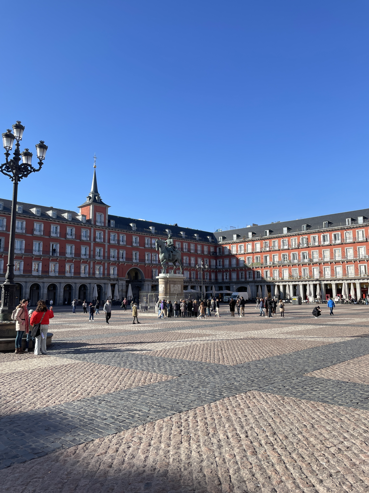
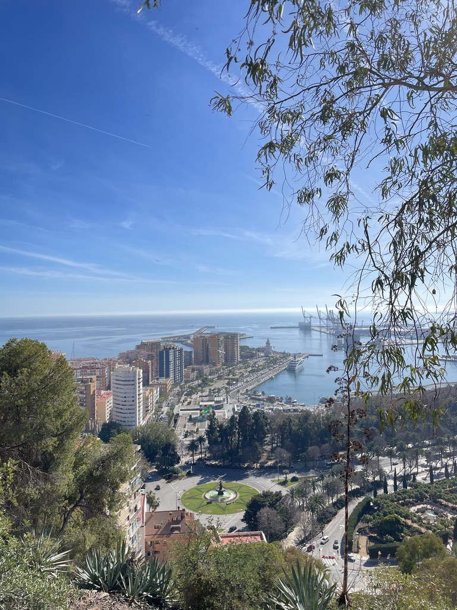

Una
Travel
United States
United Kingdom

Spain
Warm light, layered textures, and cities full of life and rhythm.
Malaga

Golden tones, coastal air, and slow afternoons — Malaga feels warm, relaxed, and quietly vibrant.
Barcelona
Barcelona feels like a living artwork — curves, colors, and sunlight in every corner.
Madrid
Madrid moves with quiet elegance — open plazas, soft light, and a calm rhythm of life.
← Back to Travel